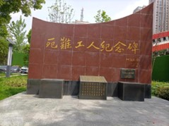
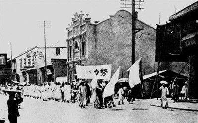
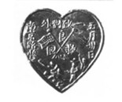
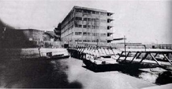
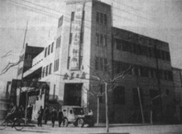
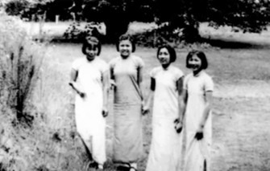
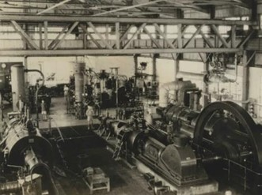
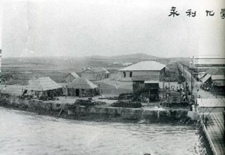
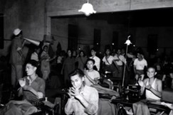

南京工人运动：抗日战争与解放战争的坚实力量
前言：
在抗击帝国主义的战争与解放战争的烽火硝烟中，南京的工人运动如同一股不可忽视的力量，为民族的解放与人民的幸福贡献了巨大的力量。让我们一同回顾那段历史，感受南京工人不屈不挠的抗争精神。
图：民国下关电厂工人运动纪念碑
一、抗击帝国主义战争时期的英勇抗争
1925年5月31日，上海五卅惨案的消息传到南京，中共南京支部召开紧急会议，决定组织和领导南京人民开展声援五卅惨案的反帝爱国斗争，会上特别强调要依靠和发动工人的力量。6月4日，东南大学等校一万多名学生在城北及下关游行并散发传单。
图：“五卅”运动时期南京各校学生示威游行
图：“五卅”纪念章
6月5日清晨，“和记”工厂门口就贴出了全体罢工的布告，5000余名工人开始了为期长达42天的罢工斗争。 南京各阶层民众反对帝国主义联合战线的形成，强有力地支持着上海乃至全国人民的斗争。
图：和记洋行厂房
1942年，南京印刷业工人在与资方进行了长达10天的斗争后，迫使资方答应增加工资六成。同年，南京机务段工人成立了“华中铁路工人抗日行动委员会”，积极向工人宣传共产党的抗日主张，并发动工人怠工、制造事故，破坏敌人的交通运输，为抗日战争的胜利作出了重要贡献。
图：新华日报接管后的中央日报大楼
1943年，中共南京工委委员姜秀英深入南京三轮车公司，与工人交朋友，关心他们的生活，启发他们进行爱国主义教育。当资方决定改变分账比例并增加工人负担时，姜秀英带领工人以结拜兄弟的方式联合起来罢工抗议，最终取得了胜利。这些斗争不仅改善了工人的生活条件，也激发了他们的抗日热情，更为如火如荼的抗日斗争添了一把火。
图：在金陵女大附中校园的山上合影，右一为姜秀英
二、解放战争时期的英勇奋斗
解放战争时期，南京的工人运动更加蓬勃地发展起来。
1948年，南京永利铔厂产业工会正式成立，为工人争取权益提供了有力的组织保障。在国民党交通部取消铁路工人生活补助费及一切津贴的背景下，京沪路工人举行了长达3小时的卧轨罢工，抗议这一不公政策。这次罢工得到了广泛的支持和响应，最终迫使国民党当局作出了让步。
图：永利铔厂车间
图：建设中的永利铔厂
在解放南京的关键时刻，南京的工人阶级更是发挥了不可替代的作用。1949年4月23日，南京解放前夕，三二六厂工人为反对国民党补给部迁厂而公开成立应变委员会，与国民党军警展开激烈斗争。同时，下关电厂工人驾驶小火轮接应解放军过江，铁路机务段轮渡所工人则驾驶拖轮驶往北岸迎接解放军。这些英勇的行动为南京的解放奠定了坚实的基础。
图：开国大典前夕南京工人赶制1.8万面国旗
结语：
抗日战争与解放战争时期的南京工人运动是一段光辉的历史篇章。在这段历史中，南京的工人阶级以坚定的信念、不屈的精神和英勇的行动为民族的解放和人民的幸福作出了巨大的贡献。他们的事迹将永远铭刻在历史的长河中，激励着我们不断前行。让我们铭记这段历史，珍惜来之不易的和平与幸福，为实现中华民族的伟大复兴而努力奋斗！